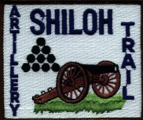
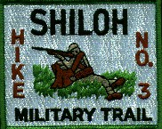

Click on a patch to see details about the hike
Trails 1, 2, 3, 4, 4a, and 7 are temporarily re-routed. More Info |
Battlefield Trek | (Cub Scout Trails) | 2 Mile Hike |
| Indian Mounds Trek | (Cub Scout Trails) | 3 Mile Hike | |
 |
Historical Trail | SMT 1 | 14 Mile Hike |
|  | Artillery Trail | SMT 2 | 14 Mile Hike |
|  | Historical Trail | SMT 3 | 14 Mile Hike |
 |
Compass Trail (Green)(Even Years) | SMT 4A | 10 Mile Hike |
 |
Compass Trail (Red)(Odd Years) | SMT 4 | 10 Mile Hike |
| Confederate Army Approach | SMT 5 | 20 Mile Hike | |
| Environmental Trail | SMT 7 | 12 Mile Hike |
Please observe all National Park Guidelines and File Travel Permits if a Scouting Organization.